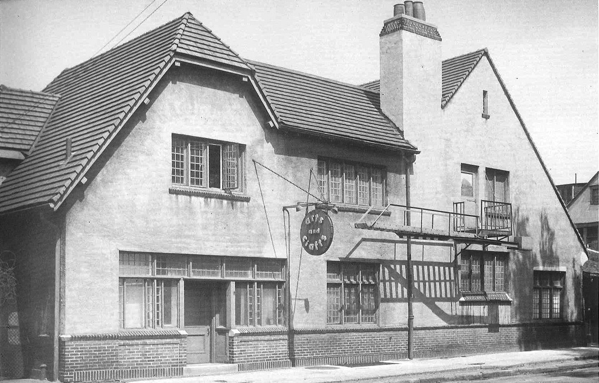
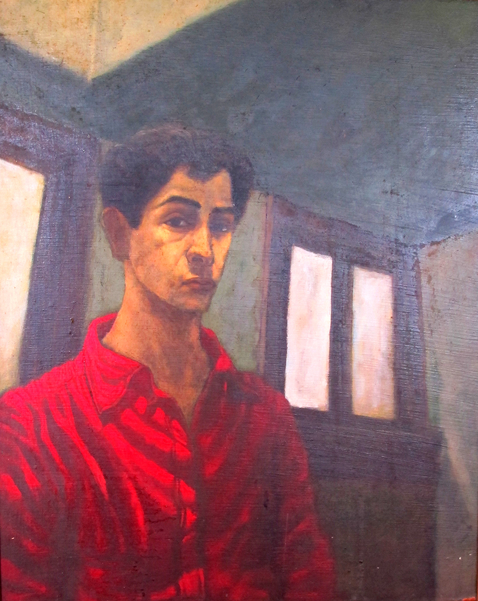

Inspired by the English Arts and Crafts movement of the late 19th and early 20th centuries, local civic leaders found the Detroit Society of Arts and Crafts in 1906 in order to promote the ideals of beauty and craftsmanship in an increasingly industrial age. The society's school, offering a formal, four-year education in art, opens in its Brush Park headquarters in 1926.3
On weekends in the early 1950s, the teenage Rubello takes the streetcar from his home on Detroit's east side to the school, where he studies drawing and painting. In 1955, after graduating from Cass Technical High School, he earns a scholarship to return to Arts & Crafts full-time. ("I showed up with one painting and showed it to Guy Palazolla, the assistant director. He showed it to Sarkus Sarkesian, the director, and I got the scholarship. I didn't have to fill out any paperwork or anything.") For one year, Rubello takes classes in painting and figure drawing from 9 am - 9 pm, Monday through Friday.
In 1958, the Detroit Society of Arts and Crafts moves into a new building, designed by Minoru Yamasaki, in the city's cultural center. By 1975, its has expanded and become the Center for Creative Studies -- known today as the College for Creative Studies , a leading institution of art and design and education. Its former Brush Park home, vacant and in serious disrepair , is demolished in 2006.
See CHARLES MCGEE and DAVID RUBELLO